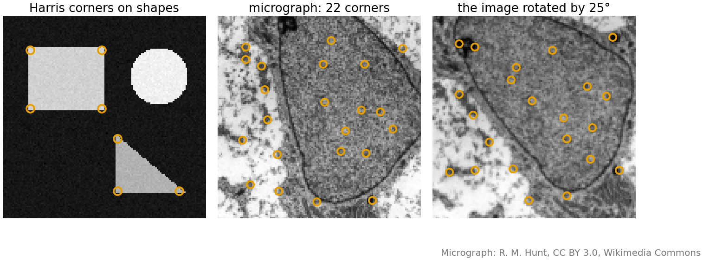
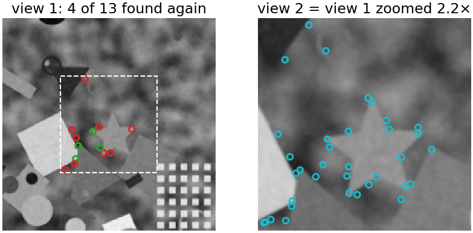
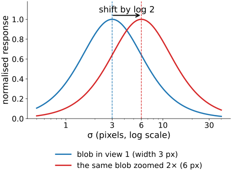
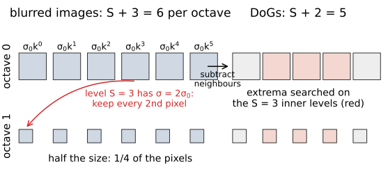
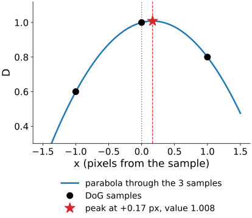
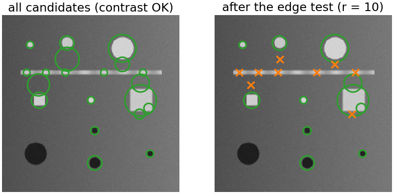
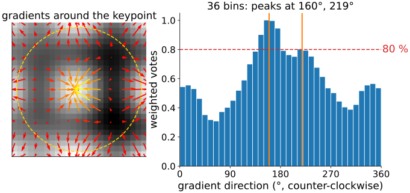
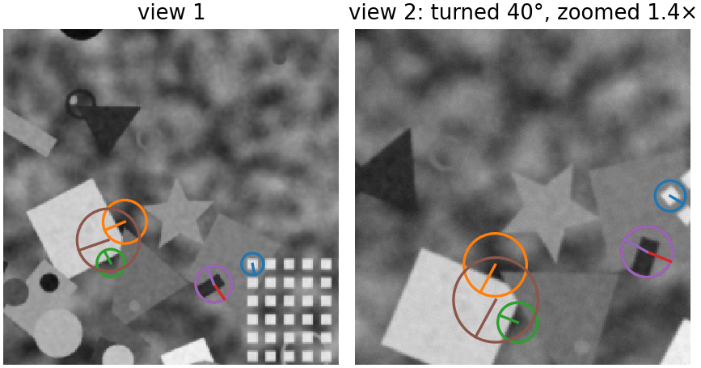
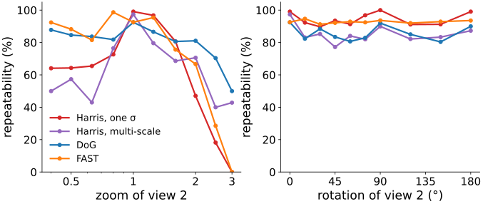
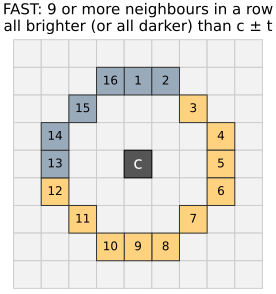

Two photographs of the same thing, taken from different places, at different zoom, turned. Which points can we find in both? This unit finds them; the next three units describe them, match them and fit a transform to the matches.
What makes a good interest point: repeatable and distinctive.
Corners (recall) and why zoom breaks a detector with one fixed σ.
Keypoints with a scale: extrema of the difference of Gaussians in (x, y, \sigma), over an octave pyramid.
Refining a candidate to sub-pixel position and scale; throwing away weak and edge-like candidates.
An orientation for each keypoint, and how to measure a detector: repeatability.
Slides titled The math give the formulas and proofs; the ideas are complete without them.
Two requirements: repeatability (the detector fires at the same physical point in both views) and distinctiveness (its neighbourhood looks unlike the others, so that it can be recognised). Uses: panoramas, slide-scanner tiles with rotation, serial sections, geometry from photographs.
Recall: corners are interest points
From the structure tensor unit: a window on a corner changes under every small shift, so it can be found again in a shifted image.
Structure tensor J (gradients averaged in a window); eigenvalues \mu_1 \ge \mu_2.
Corners survive shift and rotation: the eigenvalues of J do not change when the image turns (right: 16 of 22 corners found again after turning by 25°).
The question for today: what happens when the image is zoomed?

Try it: corners (recall)
Zoom breaks a detector with one σ

Harris with derivative scale σ = 1.5 px on a view and its 2.2× zoom:
the window is fixed in pixels, so it covers a 2.2× smaller piece of the scene in view 2;
a slightly rounded corner becomes a gentle curve, an edge; small texture corners appear that were invisible before;
here only 4 of 13 points are found again (31 %).
The same physical structure needs a window proportional to its size.
Give each point a scale
From the scale-space unit: the scale-normalised Laplacian of a blob peaks at a σ proportional to the blob’s size.
Zoom the image by s: the peak moves from σ to s\sigma, and the position from (x, y) to (sx, sy).
So a detection is a point in (x, y, \sigma): a local extremum over position and scale (26 neighbours in a 3 × 3 × 3 cube).
The scale is measured, not chosen. It sets the size of the window that the next unit describes.

The math: scale covariance
Zoom by s: I_2(\mathbf x) = I_1(\mathbf x/s). Blurring commutes with the zoom if σ is scaled too:
Each derivative brings a factor 1/s: \nabla^2 L_2(\mathbf x; \sigma) = s^{-2}\,\nabla^2 L_1(\mathbf x/s; \sigma/s).
With the normalisation \sigma^2: \ \sigma^2\nabla^2 L_2(\mathbf x; \sigma) = (\sigma/s)^2\,\nabla^2 L_1(\mathbf x/s; \sigma/s). The two functions are the same function after the change of variables (\mathbf x, \sigma) \to (\mathbf x/s, \sigma/s), so every extremum at (\mathbf x, \sigma) in image 1 appears at (s\mathbf x, s\sigma) in image 2.
Without \sigma^2, the response falls like \sigma^{-2} and the extrema over σ are pulled to the smallest scale: the wrong scale (the scale-space unit’s “Why scale-normalise”).
The DoG is already normalised: D = L(\cdot; k\sigma) - L(\cdot; \sigma) \approx (k - 1)\,\sigma^2\nabla^2 L (scale-space unit, “DoG ≈ LoG”).
The octave pyramid
Computing many blurs of a large image is expensive. Organise them in octaves (a doubling of σ):
blur in steps of k = 2^{1/S}, e.g. S = 3 steps per octave;
subtract neighbours: S + 2 DoGs; look for extrema on the S inner levels;
after a doubling of σ, keep every second pixel (blur before downsampling: the image is already blurred enough);
the whole pyramid costs about 4/3 of the first octave.
Often the first octave is computed on a 2× upsampled image, to catch the smallest blobs.

The math: octaves
Levels \sigma_i = \sigma_0 k^i with k = 2^{1/S}, i = 0, \dots, S + 2: S + 3 blurred images, S + 2 DoGs D_i = L_{i+1} - L_i. An extremum needs a DoG below and above, so the S levels 1 \dots S are searched, and together the octaves cover every scale once.
Incremental blur (the semigroup property of Gaussians, recall): L_{i+1} = G_{\sqrt{\sigma_{i+1}^2 - \sigma_i^2}} * L_i, and \sqrt{\sigma_{i+1}^2 - \sigma_i^2} = \sigma_i\sqrt{k^2 - 1}.
Level S has \sigma_S = 2\sigma_0: subsampled by 2 it is the start of the next octave, with \sigma_0 in the new pixels.
Cost: an octave has 1/4 of the pixels of the one before, 1 + \tfrac14 + \tfrac1{16} + \dots = \tfrac43.
With \sigma_0 = 1.6, S = 3: \sigma = 1.60, 2.02, 2.54, 3.20, 4.03, 5.08 in octave 0; a keypoint in octave o, level \ell has \sigma = \sigma_0\,2^{o + \ell/S} in original pixels.
Try it: the DoG pyramid, step by step
Refining a candidate
The true extremum lies between the samples, in position and in scale.
Fit a parabola through the samples around the candidate, along x, y and σ (in 3D: a quadratic through the 3 × 3 × 3 cube).
Its vertex gives the sub-pixel position and the sub-level scale.
If an offset is larger than half a sample, move to that neighbour and fit again; a candidate that keeps moving is dropped.
Example: DoG samples 0.6, 1.0, 0.8 at x = -1, 0, 1: peak at x = +0.17, value 1.008. The same three-point rule as in spot localisation.

The math: sub-pixel refinement
Expand D around the sample \mathbf x_0 to second order, with \mathbf h = (h_x, h_y, h_\sigma):
D(\mathbf x_0 + \mathbf h) \approx D + \nabla D^\top\mathbf h + \tfrac12\,\mathbf h^\top\mathcal H\,\mathbf h .
Setting the gradient in \mathbf h to zero: \nabla D + \mathcal H\hat{\mathbf h} = 0, so \hat{\mathbf h} = -\mathcal H^{-1}\nabla D.
\nabla D and the 3 × 3 Hessian \mathcal H by central differences in the cube, e.g. D_x = (D_{+1} - D_{-1})/2, D_{xx} = D_{+1} - 2D_0 + D_{-1}.
In 1D: \hat h = \dfrac{D_{-1} - D_{+1}}{2(D_{-1} - 2D_0 + D_{+1})}; for 0.6, 1.0, 0.8: \hat h = -0.2 / (2 \cdot (-0.6)) = 1/6.
Throw away weak and edge-like candidates
Low contrast: |D| at the refined peak below a threshold: an extremum of noise. The threshold scales with the noise (as in How many false spots?).
Edges: the DoG also responds along an edge or a line. There the position along the edge is undefined (the aperture problem again), so the point cannot be found again reliably.
Test: the curvature across the edge is large, the curvature along it small. Reject if their ratio exceeds r (typically 10).
Right: along the bar every candidate is edge-like (orange): removed. Blobs and corners of small squares stay.

The math: the edge test
At the refined point take the 2 × 2 spatial Hessian of D, \mathcal H_2 = \begin{pmatrix} D_{xx} & D_{xy}\\ D_{xy} & D_{yy}\end{pmatrix} (recall the Hessian unit: eigenvalues = principal curvatures).
Eigenvalues \alpha = r\beta with r \ge 1: \dfrac{\operatorname{tr}^2}{\det} = \dfrac{(\alpha + \beta)^2}{\alpha\beta} = \dfrac{(r + 1)^2}{r}, which grows with r.
So keep if \det \mathcal H_2 > 0 and \operatorname{tr}^2/\det < (r + 1)^2/r: 12.1 for r = 10. No eigenvalues needed.
\det < 0: the curvatures have opposite signs, a saddle: reject.
Around the keypoint (a disc of radius ∝ σ), a histogram of gradient directions in 36 bins of 10°, each gradient weighted by its magnitude and a Gaussian window.
The highest peak is the orientation θ.
A second peak above 80 % of the highest gives a second keypoint at the same place (about 15 % of points in photographs; 45 % in our synthetic scene, whose round blobs have no single direction).
Rotate the image by φ: every gradient turns by φ, the histogram shifts, θ turns by φ. Describing the window relative to θ removes rotation.

The math: orientation and repeatability
Orientation histogram: bin b collects \|\nabla L\|\,e^{-\|\mathbf x - \mathbf x_0\|^2/2(1.5\sigma)^2} for every pixel with \theta = \operatorname{atan2}(-L_y, L_x) (counter-clockwise on the screen) in that bin, on the blurred image of the keypoint’s level; the peak is refined by the three-point parabola, now on a circle (bins wrap around).
Repeatability of a detector under a known transform T (image 1 → 2):
counted only in the region seen by both images, each point of image 2 used once; s is the zoom of T. Single-scale detectors skip the scale condition.
What a keypoint is now

A keypoint is (x, y, \sigma, \theta): a small coordinate frame.
It moves with the image under translation, zoom and rotation.
Read the window in this frame, and these three changes are gone before anything is described (next unit).
What remains: lighting, blur, noise, and changes the frame cannot follow.
Measuring a detector: repeatability

Known transform → count the points found again (within 2.5 px, matching scale).
Single-scale detectors (Harris one σ, FAST) collapse with zoom: 47 % and 67 % at 2×, 0 at 3×.
DoG stays at 81–92 % from 0.5× to 2×, then degrades (70 % at 2.5×).
Rotation hurts none of them much (80–100 %).
Our multi-scale Harris (normalised Harris, scale by the Laplacian) lies in between.
Try it: repeatability
What is not covered
Strong tilt (perspective): circles become ellipses, and a circular window no longer covers the same piece of surface. Affine-adapted detectors estimate the ellipse from the structure tensor (one line; further reading).
Heavy blur and non-rigid deformation: the scale and the frame drift.
No texture: an empty field has no keypoints. Then intensity-based alignment (phase correlation) is the better tool.
Repetitive texture: repeatable, but not distinctive (units 2 and 3).
Other detectors
FAST: a ring of 16 pixels around the centre; a corner if 9 or more in a row are all brighter (or all darker) than the centre by t. Very cheap, no scale: used on every level of a pyramid.
Determinant of the Hessian with box filters: a fast blob detector (integral images).
MSER: regions that stay the same over many thresholds (watershed flooding).
Learned detectors: networks trained on many image pairs (further reading).
Image libraries call the DoG detector with orientations “SIFT keypoints”. A spot detector (point detection) finds blobs too, but without the frame and the description.

Summary
A good interest point is repeatable and distinctive. Corners are repeatable under shift and rotation, not under zoom.
Keypoints with a scale: extrema of the DoG in (x, y, \sigma), over an octave pyramid (blur in steps of 2^{1/S}, halve the size at each doubling of σ).
Refine to sub-pixel position and scale; drop weak candidates and edge-like ones (curvature ratio r).
An orientation from a histogram of gradient directions; a keypoint is a frame (x, y, \sigma, \theta) that moves with the image.
Measure detectors by repeatability under a known transform.